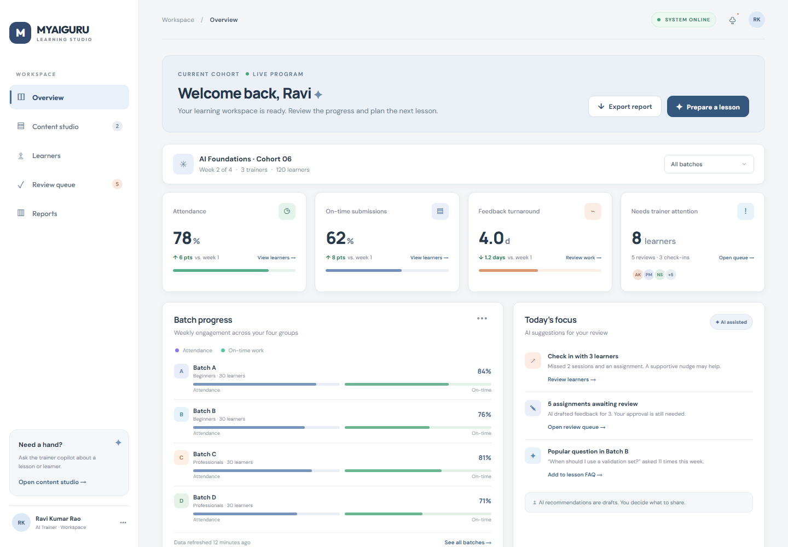

Prepared by: Ravi Kumar Rao
Application email: ravikumarrao457@gmail.com
Candidate case study 01 · Fictional four-week introductory AI program
Live prototype: https://myaiguru-trainer-assistant-ravi.onrender.com/
Local run: python server.py then open http://127.0.0.1:8765/. The dashboard uses fictional data in SQLite. Approvals and audit records persist between reloads on the local version. The course Q&A retrieves approved sample answers from SQLite; no generative model or messaging service is connected. Render's free host can reset its demo database when it sleeps or restarts.
MYAIGURU serves 120 learners across four batches with three trainers. Trainers prepare content, track attendance, review work, answer repeated questions and create progress reports manually. The starting indicators are 78% attendance, 62% on-time assignment submission and four days average feedback turnaround.
The product opportunity is to reduce repetitive preparation and response work while making learner support more timely. AI can draft, summarize and surface patterns. Trainers remain accountable for curriculum, grading, learner outreach and every item shared with learners.
| Stakeholder | Current journey / need |
|---|---|
| Learner | Joins a live session, finds materials across channels, asks questions, submits an assignment and waits for feedback. Needs accessible explanations, timely help and clear expectations. |
| Trainer | Interprets the curriculum, prepares slides and exercises, takes attendance, answers repeated questions, reviews work and compiles reports. Needs less repetitive work and control over teaching quality. |
| Program administrator | Coordinates four batches and trainer coverage, tracks attendance/submissions and reports cohort health. Needs consistent, timely data and an audit trail. |
| Curriculum owner | Defines learning outcomes and approved materials. Needs generated content to remain aligned with the curriculum and current facts. |
| KPI | Baseline | Initial target after 2 cohorts | Why it matters / calculation |
|---|---|---|---|
| Attendance rate | 78% | 85% | Learner engagement; attended learner-sessions ÷ scheduled learner-sessions. Compare by batch and week. |
| On-time assignment rate | 62% | 75% | Practice completion; assignments submitted by due date ÷ assignments due. Segment by assignment and batch. |
| Median feedback turnaround | 4 days average | ≤2 days median | Feedback usefulness and trainer workload; time from submission to trainer-approved feedback. Track median and 90th percentile to avoid hiding delays. |
Targets are hypotheses to validate with administrators and trainers. Compare equivalent cohorts and do not attribute improvement to AI alone without a suitable evaluation design.
Run python server.py and open http://127.0.0.1:8765/ for the interactive Trainer Workspace prototype. It includes cohort KPIs, batch filtering, AI suggestions, a lesson drafting workflow with required review checklist, learner pulse, feedback review, a course-grounded question demo and cohort insights. Responsive styling supports laptop and mobile layouts.

Example lesson prompt: “Using only the trainer-approved Module 2 source, draft a 60-minute beginner lesson for the objective [objective]. Include a warm-up, explanation, guided activity, three formative checks and an exit ticket. Label every generated item, cite the source section, use English with simple Hindi examples, and flag claims not supported by the source. Do not invent policy or assess a real learner.”
Example feedback prompt: “Compare this pseudonymized submission with the trainer-approved rubric. Draft two strengths and one next step in a supportive tone. Do not assign a grade, infer intent or add facts not in the rubric. Return evidence from the learner’s work and cite the rubric criterion. A trainer will review before release.”
Design decisions: leading with cohort-level signals makes workload visible; missing data is separate from low performance; learner names are masked in the demo; AI suggestions carry explicit draft labels; approval checklists prevent accidental release; source tags make provenance visible; the copilot abstains when no approved-content match exists.
Prototype limitation: Lesson outlines are templates, and Q&A uses a small approved-answer library in SQLite. The local server stores fictional demo data only and does not call an external AI model or send messages. A production system would need authentication, authorization, source ingestion/versioning, a stronger retrieval service, data retention controls and monitoring before any real learner data is used.
| Scenario | Steps | Expected outcome |
|---|---|---|
| Incorrect AI answer | Ask a question whose answer conflicts with the approved source, or whose source is absent. | Assistant abstains or flags uncertainty, shows available source evidence, adds the question to trainer review and does not publish an answer. Trainer can correct the source-grounded response. |
| Inappropriate or inaccurate lesson material | Generate a lesson containing a questionable example or wrong quiz key; leave one checklist item unchecked and try to approve. | Approval remains disabled until all checks are completed. Trainer can edit/remove the material; the learner receives nothing until approval. The change is logged. |
| Learner privacy / access | A trainer attempts to open another batch’s learner-level assignment feedback; a prompt includes identifiable personal details. | Access is denied and logged for the unauthorized record. Prompt input warns against personal data and production service redacts/rejects it. Aggregated cohort metrics remain available to authorized roles. |
| Time | What to cover |
|---|---|
| 0:00–0:40 | Introduce the fictional program and the 78%, 62%, four-day baseline. |
| 0:40–1:30 | Walk through the learner/trainer journey and pain points. |
| 1:30–2:15 | Explain discovery questions and the three KPIs. |
| 2:15–3:15 | Demonstrate dashboard, batch filter and trainer focus suggestions. |
| 3:15–4:20 | Demonstrate lesson draft, source references and trainer checklist. |
| 4:20–5:10 | Show learner Q&A and feedback review; call out abstention and human approval. |
| 5:10–6:00 | Explain privacy, incorrect content safeguards and UAT scenarios. |
| 6:00–7:00 | Teach the beginner concept below; close with prototype limits and next steps. |
“Imagine you study for a quiz by memorizing the exact practice questions and their answers. You may get those same questions right, but if the teacher changes the wording, you struggle. A machine-learning model can do the same thing: it can memorize patterns in its training examples instead of learning a useful general rule. That is called overfitting. We can check whether a model generalizes by testing it on examples it did not train on. A validation set helps us compare choices while we build the model; a separate test set is saved for a final, fair check. So the key idea is: good training performance is not enough—we also want the model to work on new examples.”